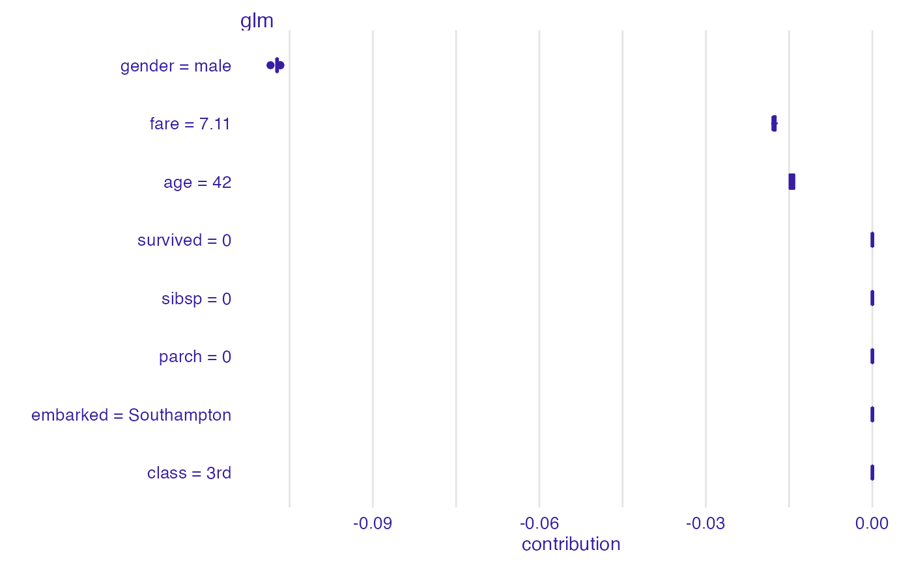

R/print_break_down_uncertainty.R
print.break_down_uncertainty.RdPrint Generic for Break Down Uncertainty Objects
# S3 method for break_down_uncertainty print(x, ...)
| x | an explanation created with |
|---|---|
| ... | other parameters. |
a data frame.
Explanatory Model Analysis. Explore, Explain and Examine Predictive Models. https://pbiecek.github.io/ema
library("DALEX") library("iBreakDown") set.seed(1313) model_titanic_glm <- glm(survived ~ gender + age + fare, data = titanic_imputed, family = "binomial") explain_titanic_glm <- explain(model_titanic_glm, data = titanic_imputed, y = titanic_imputed$survived, label = "glm")#> Preparation of a new explainer is initiated #> -> model label : glm #> -> data : 2207 rows 8 cols #> -> target variable : 2207 values #> -> data : A column identical to the target variable `y` has been found in the `data`. ( WARNING ) #> -> data : It is highly recommended to pass `data` without the target variable column #> -> model_info : package stats , ver. 3.6.3 , task regression ( default ) #> -> predict function : yhat.glm will be used ( default ) #> -> predicted values : numerical, min = 0.1490412 , mean = 0.3221568 , max = 0.9878987 #> -> residual function : difference between y and yhat ( default ) #> -> residuals : numerical, min = -0.8898433 , mean = 4.198546e-13 , max = 0.8448637 #> A new explainer has been created!#> min q1 median mean #> glm: age = 42 -0.01492541 -0.01492541 -0.01434645 -0.01446344 #> glm: class = 3rd 0.00000000 0.00000000 0.00000000 0.00000000 #> glm: embarked = Southampton 0.00000000 0.00000000 0.00000000 0.00000000 #> glm: fare = 7.11 -0.01823177 -0.01784977 -0.01784977 -0.01773120 #> glm: gender = male -0.10843751 -0.10725651 -0.10725651 -0.10725810 #> glm: parch = 0 0.00000000 0.00000000 0.00000000 0.00000000 #> glm: sibsp = 0 0.00000000 0.00000000 0.00000000 0.00000000 #> glm: survived = 0 0.00000000 0.00000000 0.00000000 0.00000000 #> q3 max #> glm: age = 42 -0.01405996 -0.01396446 #> glm: class = 3rd 0.00000000 0.00000000 #> glm: embarked = Southampton 0.00000000 0.00000000 #> glm: fare = 7.11 -0.01741824 -0.01705077 #> glm: gender = male -0.10725293 -0.10667755 #> glm: parch = 0 0.00000000 0.00000000 #> glm: sibsp = 0 0.00000000 0.00000000 #> glm: survived = 0 0.00000000 0.00000000plot(bd_glm)if (FALSE) { ## Not run: library("randomForest") set.seed(1313) model <- randomForest(status ~ . , data = HR) new_observation <- HR_test[1,] explainer_rf <- explain(model, data = HR[1:1000,1:5], y = HR$status[1:1000], verbose = FALSE) bd_rf <- break_down_uncertainty(explainer_rf, new_observation) bd_rf # example for regression - apartment prices # here we do not have intreactions model <- randomForest(m2.price ~ . , data = apartments) explainer_rf <- explain(model, data = apartments_test[1:1000,2:6], y = apartments_test$m2.price[1:1000]) bd_rf <- break_down_uncertainty(explainer_rf, apartments_test[1,]) bd_rf }